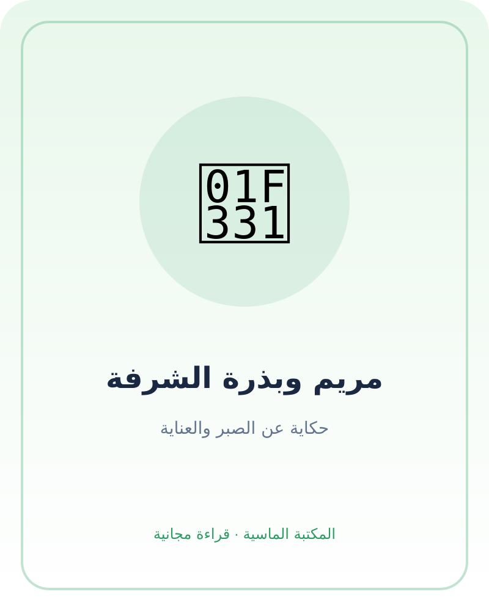

مريم وبذرة الشرفة
قصة عربية أصلية عن الفضول والصبر والعناية بالنبات، مع أسئلة نشاط في نهاية الكتاب.
الظرف الصغير
في صباح ربيعي، وجدت مريم ظرفًا ورقيًا صغيرًا على طاولة المطبخ. كتبت جدتها عليه: «شيء صغير يحمل حكاية كبيرة». فتحته مريم بحذر، فوجدت بذرة بنية مستديرة. قالت: «هل هذه حصاة؟» ابتسمت الجدة: «إنها بذرة، لكنها تحتاج إلى تربة وماء وضوء ووقت. هل نعتني بها معًا؟».
مكانها قرب الضوء
اختارت مريم أصيصًا صغيرًا على الشرفة. وضعت الجدة في قاعه تربة نظيفة، ثم ساعدت مريم على صنع حفرة صغيرة. غطت البذرة برفق، ورشت عليها قليلًا من الماء. لم يكن مسموحًا لمريم أن تحمل كيس التربة الثقيل وحدها، فطلبت مساعدة جدتها. اتفقتا أن يبقى الأصيص بعيدًا عن حافة الشرفة.
أيام الانتظار
في اليوم التالي، ركضت مريم إلى الأصيص. لم ترَ ورقة خضراء. سألت: «هل لم تنجح؟». قالت الجدة: «بعض الأشياء تحتاج وقتًا. دعينا نلاحظ التربة ونتذكر ما اتفقنا عليه». رسمت مريم دائرة صغيرة في دفترها لتتذكر يوم الزراعة، ثم وضعت علامة كل يوم تسقي فيه النبتة بالقدر الذي أوصت به جدتها.
صديقة جديدة
بعد أيام، ظهر خط أخضر صغير. نادت مريم أخاها سامر: «تعال وانظر، لقد بدأت البذرة رحلتها!». أراد سامر أن يلمس الورقة بقوة، فتوقفت مريم بلطف: «لنلمسها برفق، فهي صغيرة». أحضرا عودًا خشبيًا وكتبا عليه اسم النبتة: «رفيقة الشرفة».
مشكلة صغيرة وحل
في ظهيرة حارة، بدت التربة جافة. لم تزد مريم الماء وحدها؛ سألت جدتها أولًا. نقلتا الأصيص إلى مكان مضيء لا تصله حرارة قوية، وسقتاه بهدوء. قالت الجدة: «العناية ليست أن نفعل الكثير بسرعة، بل أن نلاحظ ونسأل ونتابع».
حكاية تكبر
كبرت النبتة وظهرت عليها ورقتان جديدتان. رسمت مريم النبتة في دفترها، وكتبت تحتها: «أنا أتعلم أن أصبر وأهتم». جلست مع سامر وجدتها، وكل واحد أخبر الآخرين عن شيء صغير يعتني به: سامر يرتب كتبه، والجدة تروي قصة، ومريم تسقي النبتة مع إشرافها.
أسئلة وأنشطة
- ما المشكلة أو الشعور الذي ظهر في القصة؟
- ما التصرف اللطيف أو الآمن الذي ساعد الشخصية؟
- اختر قيمة واحدة تريد تجربتها اليوم في البيت.